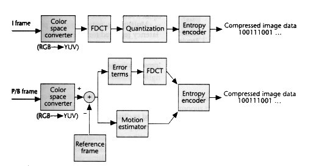

the only way to learn mathematics is to do mathematics.
the only way to learn mathematics is to do mathematics.
The video taken by camera RawVideo can be around 60GB per hour and it is very hard to manage and very tough to transfer it requires very high bandwidth to transmit and to process it also require very high processing power. to resolve this we compress the video files with the help of codecs the audio file and all other required contents to a container. MPEG-4 is the widely used container and it supports most of the audio video formats.
MPEG-4 stands for moving picture expert group-4. MPEG-4 is one type container. It provide good video quality at lower bit. It includes both audio and video data and supports multiple A/V codecs. Mostly it used for transmit video content over the web and for streaming videos on the internet in large scale of amount.
In a video there is a term called frame rate which is number of frames per second example for in 60 frames per second video there are 60 different frames going in a second so there is possibility that there are two frames which are same so this makes no sense to save both frames.so we use some compression methods to overcome this.one of the most famous method is I-B-P frame differentiation and then compression of respective frame using compression algorithms.The I-frames are “key-frames”, which have no reference to other frames and their compression is not that much.A P‑frame (Predicted picture) holds only the changes in the image from the previous frame.The B‑frame (Bidirectional predicted picture) saves even more space by using differences between the current frame and both the preceding and following frames to specify its content. P and B frames are also called Inter frames. The order in which the I, P and B frames are arranged is called the Group of pictures.in normal scenario in the classification of I-B-P frames is IBBPBBPBBPBBIBBPBB...the compression ratio is 1:27 in this frame distribution.
If in a certain case the colour channel is RGB (Red, Green, Blue) then after passing it through a colour space converter it gets converted to another colour channel e.g. - YCbCr for better image representation/vision and it would be easier to solve further tasks using the new colour chan- nel. Similarly, any colour channel gets converted to another with the help of this converter.
In DCT transformation, we get the input as the matrix of NxN where N is the pixels of the image.
The output of the DCT transformation is also a matrix of NxN de- noted by V which is given by
V = C U CT
where U is the matrix of the input image whose order is given by its pixel
V is the output of the DCT
 , 0≤ k ≤ N−1;
, 0≤ k ≤ N−1;
C matrix is given by the following formula:-

Once, we get a matrix c we have to multiply it by our image matrix which was passed on as out input to DCT, U and would get an inter- mediate which we have to multiply by the transpose of C to get our fi- nal DCT matrix.
It involves lossy compression technique achieved by compressing a range value to a single quantum value. (Simply it converts the continuous signal to discrete signals) In this process, there is a pre-defined quantisation matrix for each color channel.


After getting 8×8 matrix from quantization, to pass this matrix to en- tropy encoding stage, we’ve to convert it into a 1D array. will give 1D array of integers.The largest term in the section is known as DC coeffi- cient while all other terms are known as AC coefficients.

It is a type of lossless coding to compile data type.
This technique involves replacing data elements with coded represent- ation of data elements which is passed on as an input to entropy de- coder block.
There are two types of entropy encoding:
1) Huffmann encoding
2) Arithmetic encoding
Arithmetic encoding is better than Huffmann encoding as its compres- sion ratio is larger than Huffmann encoding.
It is a method of compression of data which compresses the data which much efficient loss of any data.
Encoded Hufmann tree
Code word for ‘COMMITTEE’ becomes 00100011010000011110101 Size=23 bits Hence, size is reduced(23 is less than 27)
Efficiency computation:
η = H(s) Lavg
H(s) =-N−1 Pi log2 Pi i=0
=(2 log 2)+3(1 log 1) 929929
Lavg = Nk=1 PkIk
=2×29 +2×29 +2×29 +3×19 +4×19 +4×19 = 2.55
η = 2.503 2.55
= 97.97% efficiency
Consider the input string abcad and their respective probabilities are P(a)=0.2,P(b)=0.3,P(c)=0.1,P(d)=0.4 encode using AE.

Difference(d) = upper limit - lower limit
Range:- lower limit + d * (Probability of particular symbol)
The process of colur space converter is same as discussed in Compres- sion Of I-Frame.
The proccess of FDCT(Forward Discrete Cosine Transform) is same as discussed in Compression of I frame.
A new pel-recursive motion estimation algorithm for video coding ap- plications is presented. The derivation of the algorithm is based on re- cursive least-squares estimation that minimises the mean-square predic- tion error. A comparison with the modified steepest-descent gradient estimation technique algorithm shows significant improvement in terms of mean-square prediction error performance
The Block Matching is a temporal compression technique used in the video encoding. The main purpose of this method is to determine the displacements of each block of pixels between two successive frames. This technique, performed in the step of motion estimation, occupies the majority of the total time of video coding. The aim of this work is to give a comparative study various search algorithms by Block Match- ing.It simply use to reduce the amount of data which is required to store and transmit the video. The motion estimation process is an in- extricable part of the video coding as it removes the temporal redund- ancy between successive frames of video sequences.
Algorithm:-
The PSNR or Signal to Noise Ratio is given by where MSE is the Mean Square Error calculated by. (H×L) is the frame size, X and X are re- spectively the original frame and the predicted frame. We note that
for color frame, equations and are applied separately on the Red com- ponent (R), green component (G) and blue component (B) of the RGB color space. The global PSNR of the R, G and B components is the PSNR average of these three components.
PSNR = 10log10(2552MSE)MSE
P-B frame compression is performed same as we seen in I frame compression.
Decode the messege “00010110011011000” for given symbols and probability.
‘MALAYALAM’ is decoded string.
Properties of Huffmann code:-
It gives unique encoded and decoded code. Its process is instantaneous.
It produces a lossless compression of image.
Let us decode the encoded messege as we have get in the previous example.
To decode the encoded messege → 0.07096 → messege
We have been given the probabilities
P(a) = 0.2, P(b) = 0.3, P(c) = 0.1, P(d) = 0.4, Input = 0.07096

We have to select the interval in which the encoded code lies and zoom in it and further we have to do the same thing till we come very rear (3 places after decimal) to the encoded code.
We also have to note whose range we have zoomed in to get our de- coded code.
In this case it is ‘abcad’.
The method to find the gap between two consecutive range remains the same as we have done in arithmetic encoding.
Advantages:-
It follows lossless compression methods in which no data is lost on being compressed.
It encodes the whole life as a sequence of symbols into a single decimal number.
It has advantages over Huffmann encoding as its compression ratio is 5-10 % letter than HE.
It only consists of few arithmetic operations thus its complexity is re- duced AC is better than HC.
After getting 1×64 matrix from entropy decoder, to pass this matrix to dequantizer, we have to convert it into a 8×8 array.
The input to the dequantisation block is a vector of 1x64 matrix for a case of 8×8 pixel image and based on the particular colour channel there is a fixed matrix of of N×N, where N is the pixel of the image and we get the output as the product of a particular element of the vector with that of the common dequantiser matrix. This output gets passed on as the input to IDCT.
The output of IDCT will be the image itself which is to be displayed and its input would be a N×N matrix which is given as output by the dequantizer.
Its formula is:

U(n) is also given by U = C’ V C which is calculated from the above formula.
We would like to thank our course instructor Prof. Manish K Gupta and Prof. Manoj K Raut for helping us in this project.